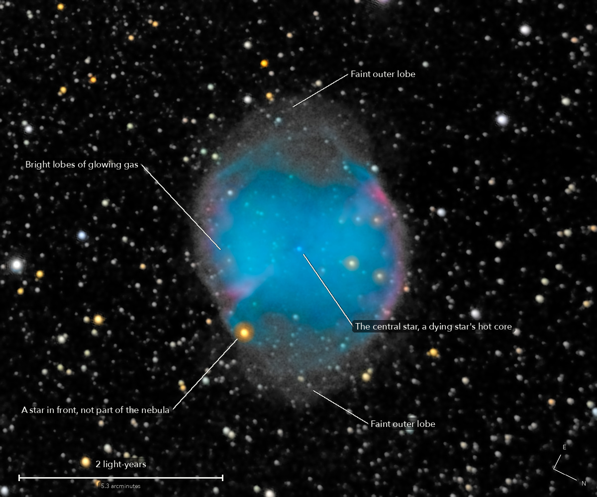

The Dumbbell Nebula
Messier 27, a planetary nebula in Vulpecula
This is what a star like the Sun does at the end: it puffs its outer layers off into space, and the bare, hot core left behind, one of the hottest stars known, makes them glow. The cloud has been growing for about 10,000 years. Charles Messier found it in 1764: the first nebula of its kind anyone saw.
What you are looking at

Swipe sideways to see the rest. Tap the picture for full size.
- Distance
- Roughly 1,300 light-years (not exactly known: 1,200 to 1,400)
- This picture spans
- About 6 light-years; the nebula with its faint outer lobes is about 3 across, and one pixel is about 300 times the distance from the Earth to the Sun
- The light left
- Around the year 700, while the Maya were raising the great temples of Tikal
- Honest note
- The glow from oxygen is a blue-green purer than any screen can show, so the screen's nearest colour stands in for it. The faint halo deep pictures show further out is not reached in 16 minutes from a suburban sky
Technical details
66 of 70 frames of 15 s. 16.5 minutes of light on a clear evening, the first target of the night.
Equipment
- Telescope
- Celestron 8SE Schmidt-Cassegrain: 203 mm aperture, 2,082.4 mm focal length by plate solve of this stack, f/10.3
- Camera
- Sony a6000, stock, at prime focus: APS-C 23.5 x 15.6 mm, 6000 x 4000, 3.9 micron pixels, RAW
- Mount
- Sky-Watcher EQ6-R, unguided, not dithered on this target. Set down about 10 degrees off the pole; aligned from four plate-solved photos (under 1 arcminute), both axes driven from that model
Acquisition
- Exposures
- 66 x 15 s at ISO 3200: 16.5 minutes. Nothing clipped on the nebula: its brightest pixel reached 12 percent of the sensor's range in a frame
- Frames
- 70 taken, 66 kept. The first after the slew was dropped by rule; three were smeared (every star stretched the same way, ellipticity 0.20 to 0.21). No cloud: every frame's stars within 2 percent of the run's typical brightness
- Sampling
- 0.777 arcsec per pixel: one pixel per 2 x 2 colour cell, never enlarged. Stars 4.47 arcsec wide (half-flux, 117 stars) in the stack, 4.94 in one frame
- Field
- 15.5 x 12.9 arcmin: a 1200 x 1000 crop from a stack of 36.9 x 24.3 arcmin, nothing resampled after the stack, not turned (north 116 degrees clockwise of up)
- When
- The evening of 17 October 2026, over 36 minutes. About 60 degrees up
- Darks
- None taken tonight. Hot pixels found from the run itself, about 20,000 to 21,500 per colour plane, and repaired by the 3 x 3 median of their colour plane
- Flats
- No flat frames tonight. The hybrid flat of 13 October: its large scale from that night's open sky, its dust from the 13 October twilight frames. Picked over two others on this run's own sky: it leaves 0.57 percent in green after a plane, against 0.80 and 1.98 for the others
- Calibration
- Dust that moved since 13 October, measured on this run's own sky, seen in the odd and the even frames alone, and divided out: 11 shadows, 0.73 percent of the sensor. Among them a new crescent 12.7 percent deep, which the 13 October flat does not have, left at 1.7 percent
Processing
- Registration
- Rotation and shift on the stars; the field drifted 3.7 arcmin across the sensor and turned 0.05 degrees. Red and blue star images sat 0.3 sensor px off green (the air's prism): measured and taken out in the one resampling
- Stacking
- RAW colour planes (no demosaic), hot pixels by 3 x 3 median, registered on stars with rotation, proper coaddition (Zackay and Ofek: each frame weighted by its own measured blur and noise). One sky constant per colour per frame; in the picture only, a sky plane per colour, about 3 DN across it. Noise 7.5 to 7.8 times lower than one frame (8.1 expected from the weights). The old sigma-clipped mean was made beside it as a control
- Colour
- The camera's colour matrix with its white balance set by the colours of 93 Gaia stars in the field (red x 1.01, blue x 1.15). The oxygen glow is outside what a screen shows; the faint lobes are grey, because their colour there is set by sky and flat, not the nebula
- Finish
- Star colours from Gaia, the camera's colour matrix. Arcsinh stretch; black at the 50th percentile, S-curve 0.15, saturation x 1.2; the dark sky smoothed (bilateral 4 px) and set near black, by choice: 4.0 percent of the picture is exactly black
- Picture size
- 1200 x 1000 pixels
- Software
- Capture and mount: Observatory (Elixir on a Raspberry Pi 3). Stacking: numpy, OpenCV, rawpy. Plate solving: astrometry.net. Stacked from the camera's RAW frames. Nothing generated.
What the picture shows
- What is real
- The bright body and the faint outer lobes that fill it out to its apple shape: 3 to 4 arcmin from the star they stand 11 to 12 times above blank sky in the odd and the even frames each alone. The nebula is followed 8.1 arcmin across
- Not seen
- The faint outer halo of deep pictures: beyond 4 arcmin from the star nothing passes the half-stack test. Nor the fine knots inside the nebula: the stars are 4.5 arcsec wide
Copy for Reddit
Everything above, in the Markdown r/astrophotography posts use. Paste it into the post's text in Markdown mode.
© 2026 Brad Gessler · Celestron 8SE (8 inch, f/10.3) and Sony a6000 on an EQ6-R · San Francisco Bay Area · night of 17 October 2026
© 2026 Brad Gessler. The pictures and the words are his own; all rights reserved.